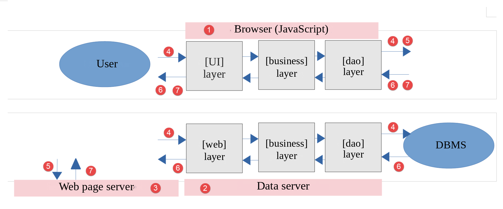

1. Introducción
El PDF del documento está AQUÍ.
El código de este documento está AQUÍ.
Este documento es un producto de Claude, de Anthropic. Se trata de una reescritura, para el lenguaje PHP 8, del curso “Introducción al lenguaje PHP 7 mediante ejemplos” escrito por Serge Tahé en julio de 2019. Conserva el esquema, los ejemplos y el hilo conductor, pero cambia el lenguaje:
- el curso de 2019 usaba PHP 7.3. Desde entonces, PHP ha tenido seis versiones mayores: 8.0 (2020), 8.1 (2021), 8.2 (2022), 8.3 (2023), 8.4 (2024) y 8.5 (2025). Este documento usa PHP 8.5;
- entre estas dos versiones, PHP ha cambiado de manera significativa: se han introducido muchas características (tipos, enumeraciones, clases de solo lectura, [match], argumentos con nombre…), y muchas otras han quedado obsoletas: siguen funcionando, pero PHP muestra un mensaje de advertencia cada vez que se utilizan, para avisar a los usuarios de que se eliminarán en una versión futura. El código de este documento no utiliza ninguna característica obsoleta: todos los scripts se ejecutaron con PHP 8.5 configurado para mostrar todos los errores, advertencias y obsolescencias, y no aparece ningún mensaje [Deprecated] en sus resultados;
- Las herramientas también han cambiado: el editor [VS Code] reemplaza al IDE [NetBeans]; el framework de pruebas [PHPUnit] reemplaza a [Codeception]; el comando [curl] reemplaza a la herramienta [Postman], la biblioteca [Symfony Mailer] reemplaza a [SwiftMailer], que ha quedado obsoleta, y el servidor de correo [Mailpit] reemplaza a [hMailServer], que también ha quedado obsoleto.
Este documento ofrece una lista de scripts de consola PHP en diversos ámbitos (estructuras del lenguaje, clases, acceso a archivos, bases de datos e Internet). La programación web se aborda mediante servicios web. En este documento, un servicio web designa cualquier aplicación web que produce datos (texto sin formato, JSON, XML) en lugar de páginas HTML. Se trata de servidores de datos, no de servidores de páginas web, que son una combinación de HTML, CSS y JavaScript. Cubre los conceptos web clásicos (el protocolo HTTP, las respuestas JSON o XML, la gestión de sesiones y la autenticación) que también se utilizan en la programación web tradicional. La sección final del documento construye además una aplicación web HTML.
1.1. El papel de PHP en una aplicación cliente/servidor
Hoy en día es habitual construir aplicaciones web en modo cliente/servidor:

- En [1], el navegador web muestra páginas web a un usuario. Estas páginas contienen JavaScript, que implementa un cliente para un servicio web de datos [2], así como un cliente para un servidor de fragmentos de páginas web [3]. Los frameworks de JavaScript como [Vue.js], [React], o [Angular] están diseñados para este fin;
- En [2], el servidor web es un servidor de datos. Puede estar escrito en cualquier lenguaje, por ejemplo, en PHP. No genera páginas web en el sentido tradicional (HTML, CSS, JavaScript), salvo quizá la primera vez. Sin embargo, esta primera página puede obtenerse de un servidor web tradicional ([3]). El JavaScript de la página inicial generará entonces las distintas páginas web de la aplicación obteniendo del servidor de datos [4] los datos que se mostrarán [2]. También puede obtener fragmentos de páginas web ([5]) para dar formato a estos datos desde el servidor de páginas web ([3]);
- En [4], el usuario inicia una acción;
- en [6, 7], el usuario recibe los datos formateados con un fragmento de página web.
En este documento escribiremos aplicaciones cliente/servidor en PHP con la siguiente estructura:

Aquí tenemos una aplicación cliente/servidor escrita íntegramente en PHP. Un script de consola [9] consultará a un servidor de datos [4]. Lo que se aprenda aquí sobre la escritura del servicio de datos puede reutilizarse en una aplicación web: se puede conservar el servicio de datos en PHP y reemplazar el cliente PHP por un cliente JavaScript.
Como hilo conductor de este documento, construiremos un servicio de cálculo del impuesto sobre la renta en 13 versiones. La versión 12 tendrá la siguiente arquitectura:

La capa [web] del servidor tendrá una arquitectura MVC (Modelo-Vista-Controlador). Podrá responder en JSON, XML o HTML. Todo el curso está orientado a construir esta versión, que la versión 13 asegura.
1.2. Qué ha cambiado entre PHP 7 y PHP 8
Las novedades de PHP 8 se presentan a lo largo de los capítulos conforme se necesitan, y siempre se comparan con la forma en que se hacían las cosas en el curso de PHP 7. Estas son las principales, junto con el capítulo en el que aparecen:
Novedad | Versión | Capítulo |
Tipado estricto ([declare(strict_types=1)]), tipos de parámetros y de retorno ([mixed]), tipos de unión ([int|float]), tipos que admiten nulos ([?string]) | 7.0 a 8.0 | Los fundamentos de PHP |
la expresión [match], el operador nullsafe [?->], los argumentos con nombre | 8.0 | Los fundamentos de PHP |
[str_contains], [str_starts_with], [str_ends_with], [array_is_list], [json_validate], [array_find], [array_any], [array_all], [array_first], [array_last] | 8.0 a 8.5 | Los fundamentos de PHP |
funciones flecha [fn], callables de primera clase [f(...)], operador pipe [|>] | 7.4 a 8.5 | Los fundamentos de PHP |
Atributos tipados, promoción de parámetros del constructor | 7.4, 8.0 | Clases |
Propiedades y clases de solo lectura [readonly] | 8.1, 8.2 | Clases |
Enumeraciones [enum] | 8.1 | Clases |
Property hooks y visibilidad asimétrica [public private(set)] | 8.4 | Clases |
[clone] con modificación de atributos, el atributo [#[\Override]] | 8.5, 8.3 | Clases |
Los tipos de intersección [A&B] y [new] en los valores predeterminados | 8.1 | Interfaces |
Errores que se han convertido en excepciones ([TypeError], [ValueError], [DivisionByZeroError]…), expresión [throw] , [catch] sin variable | 8.0 | Excepciones y errores |
Constantes en los traits | 8.2 | Traits |
[PDO::connect()] y las subclases [Pdo\Mysql], [Pdo\Pgsql] | 8.4 | MySQL |
el atributo [#[\SensitiveParameter]] | 8.2 | Ejercicio de aplicación, versiones 5 y posteriores |
la nueva API [Dom\XMLDocument] | 8.4 | Procesamiento de documentos XML |
A la inversa, estas son las principales características utilizadas por el curso de PHP 7 que ahora están obsoletas o eliminadas, junto con sus reemplazos en este documento:
Característica del curso de PHP 7 | Estado | Reemplazo |
Atributos dinámicos (creados por simple asignación [$object->x = 1]) | Obsoleto desde 8.2 | atributos declarados, o la clase [stdClass] |
interpolación ["${var}"] | obsoleta desde 8.2 | ["$var"] o ["{$var}"] |
[utf8_encode], [utf8_decode] | Obsoletas desde 8.2 | [mb_convert_encoding] |
Parámetros con nulabilidad implícita [Type $x = null] | Obsoleto desde 8.4 | [?Type $x = null] |
conversiones [(integer)], [(boolean)], [(double)] | obsoletas desde 8.5 | [(int)], [(bool)], [(float)] |
Las constantes [PDO::MYSQL_ATTR_*] | obsoletas desde 8.5 | [Pdo\Mysql::ATTR_*] |
Funciones [imap_*] | eliminadas del núcleo de PHP en 8.4 | Clientes POP3 / IMAP escritos con sockets |
la biblioteca [SwiftMailer] | discontinuada | [Symfony Mailer] |
la biblioteca [php-mime-mail-parser] | requiere una extensión que no se proporciona | [zbateson/mail-mime-parser] |
[Codeception] | Reemplazado | [PHPUnit] 12 |
Sintaxis de Apache 2.2 [deny from all] | obsoleta | [Require all denied] (Apache 2.4) |
1.3. Herramientas utilizadas
Los ejemplos se escribieron y probaron con las siguientes herramientas (su instalación se describe en el próximo capítulo):
- [PHP] 8.5, configurado para informar todos los errores, advertencias y obsolescencias;
- El paquete [Laragon] 8, que combina [Windows] y PHP 8.5, el servidor web [Apache] 2.4, el SGBD [MySQL] 8.4, el servidor [Redis] y el administrador de dependencias [Composer]; el SGBD [PostgreSQL] puede agregarse con solo unos clics;
- el editor [Visual Studio Code] (VS Code) y su extensión [PHP Intelephense];
- las bibliotecas de PHP instaladas con [Composer]: [symfony/http-foundation], [symfony/http-client], [symfony/mailer], [symfony/mime] 8, [predis/predis] 3, [zbateson/mail-mime-parser] 3 y, para las pruebas, [phpunit/phpunit] 12;
- el servidor de correo de pruebas [Mailpit] y, para el protocolo IMAP, un servidor IMAP (una cuenta de [Gmail] o un servidor local);
- la herramienta de línea de comandos [curl], incluida con [Windows], que muestra los intercambios HTTP sin procesar;
- un navegador ([Chrome], [Firefox], [Edge]…).
Los scripts de este documento están comentados y se reproduce su salida de consola. A veces se proporcionan explicaciones adicionales. Este documento requiere una lectura activa: para comprender un script, hay que leer su código, sus comentarios y los resultados de su ejecución. Las capturas de pantalla de las páginas web se tomaron con un navegador controlado por un programa: son páginas reales de las aplicaciones del curso.
1.4. Ejemplos
El código de este documento se almacena en una única carpeta llamada [php8-oct-2026]:
La carpeta [php8-oct-2026] debe colocarse dentro de la carpeta [www] de [Laragon] (por ejemplo, [C:\laragon\www\php8-oct-2026]): es el directorio raíz del servidor web [Apache]. Los scripts web son entonces accesibles en URL con la forma [http://localhost/php8-oct-2026/scripts-web/...].
1.5. Contenido del documento
Capítulo | Contenido |
Instalación | Laragon, PHP 8.5, VS Code, Composer |
Los fundamentos de PHP | Variables, tipos, tipado estricto, arreglos, cadenas, funciones, archivos de texto, JSON |
Ejercicio práctico, versiones 1 y 2 | Cálculo del impuesto, mediante funciones |
Clases, interfaces | clases, herencia, atributos tipados, [readonly], enumeraciones, property hooks, interfaces |
Excepciones y errores | La jerarquía [Throwable] de PHP 8, excepciones propias |
Ejercicio de aplicación, versión 3 | Cálculo del impuesto mediante clases |
Traits, aplicaciones en capas | Reutilización de código, arquitectura [dao] / [business] / [console] |
Ejercicio práctico, versión 4 | Cálculo del impuesto en capas, pruebas con [PHPUnit] |
Uso del SGBD MySQL | PDO, sentencias SQL preparadas, transacciones |
Ejercicio práctico, versiones 5 a 7 | Datos del impuesto en una base de datos: MySQL, luego PostgreSQL, luego cualquiera de las dos |
Funciones de red | TCP, HTTP, SMTP, POP3, IMAP |
Servicios web | Páginas estáticas y dinámicas, JSON, configuración, sesiones, autenticación, HTTPS |
Ejercicio práctico, versiones 8 a 10 | Un servidor de cálculo del impuesto y su cliente, registro de eventos, envío de correos electrónicos, caché [Redis] |
Procesamiento de documentos XML | SimpleXML, la API DOM de PHP 8.4 |
Ejercicio de aplicación, versión 11 | El servidor de cálculo del impuesto responde con XML |
Ejercicio práctico, versión 12 | Un servidor MVC que responde con JSON, XML o HTML; una aplicación web; un cliente del servicio JSON |
Ejercicio práctico, versión 13 | Acceso seguro a los archivos de la aplicación |
Todos estos son capítulos para principiantes en PHP. Sin embargo, se supone que el lector ya ha programado en algún lenguaje y sabe qué es una variable, un bucle y una función.